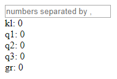
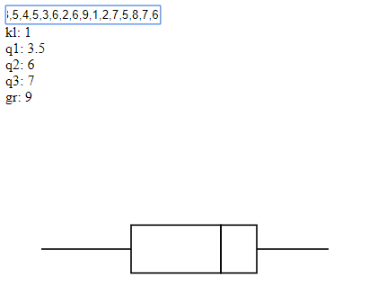

Boxplot tekenen
Contents
Boxplot tekenen#
Wat gaan we maken?#
We gaan een boxplot maken. Als je niet weet wat een boxplot is lees dan de uitleg op:
Start het elm programma boxplotdraw.elm op. Je ziet het volgende:

In het vakje kun je de waardes voor een boxplot invullen. Vul daar de volgende waardes in uit het voorbeeld van Dr. Aart:
7,3,8,6,8,5,4,5,3,6,2,6,9,1,2,7,5,8,7,6 (Let op: zet geen spaties na de komma’s).
Je ziet deze boxplot:

Hoe gaan we een boxplot maken?#
We gaan het vorige programma in Elm programmeren. Dit doen we met de volgende stappen.
Maak functie boxplotdata om de gegevens voor een boxplot te bepalen;
Maak functie boxplotdraw om met deze gegevens de boxplot te tekenen.
Merge sort#
Voor het bepalen van de mediaan en de kwartielen moet je de ingevoerde data sorteren, zoals je ziet bij het maken van boxplotdata. Je kunt daarvoor de Elm functie sort gebruiken, maar je kunt ook je eigen sorteerfunctie maken. Het Merge sort algoritme geeft een efficiënte oplossing.
In mergesort notebook bestudeer je Merge sort voor het maken van je eigen sorteerfunctie.